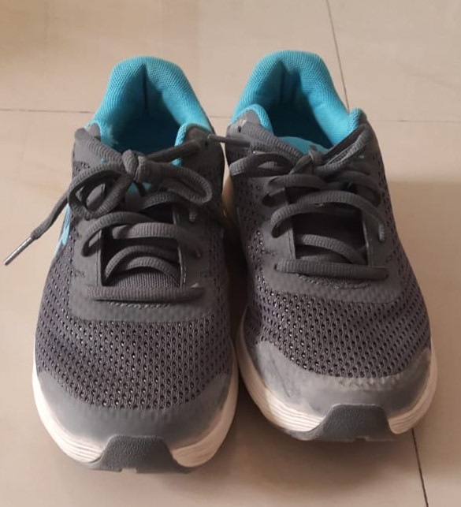

Output on GOOGLE LENS - Water BottleOutput on MOBILENET - Water Bottle Draw
2. Test Image -

Output on GOOGLE LENS - Under Amour Running Shoes Junior
Output on MOBILENET - Running Shoes Google Len is more accurate
3. Test Image -
Output on GOOGLE LENS - AUKEY Wireless Headphones
Output on MOBILENET - Sunglasses Google Len is more accurate
4. Test Image -
Output on GOOGLE LENS - Anirollz Mochi Soft Toy
Output on MOBILENET - Piggy bank Google Len is more accurate
5. Test Image -
Output on GOOGLE LENS - Confoter
Output on MOBILENET - Day Bed MobileNet is more accurate
I have tested 5 Images
MobileNet have predicted 2 of them correctly. And Google Lens predicted 3 of them correctly
So according to my case study Google Lens is more accurate